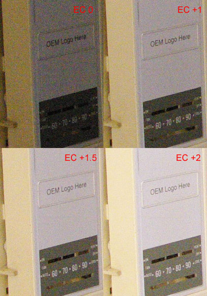

|
|
– Daystar Guest Series – ETTR Is Critical For High ISO PhotographyVersion 1.1, © 2009 by Bryan Middleton, all rights reserved ETTR = expose to the right, a technique first described here. Comparing As-Metered to ETTR
Fig. 1: ISO = 3200, Exposure compensation = 0 (complete frame)
Fig. 2: ISO = 3200, Exposure compensation = +2 (complete frame) These images were taken in my hallway. They were taken with a Pentax K20D and the 18-55mm kit lens at 18mm. Note: so that they can be considered "serious" test images, they are as uninteresting as possible!
Fig. 3: ISO = 3200, exp. comp. series, 100% crops of door  Fig. 4: ISO = 3200, exp. comp. series, 100% crops of thermostat The as-metered exposure image (Fig. 1) and the ETTR image (Fig. 2) have been resized and are included to show the overall scene and effect of ETTR. Figs. 3 and 4 show the difference in noise levels as the histogram is moved to the right. At the as-metered exposure, high ISO performance is not that exciting. Things look pretty grainy and both the thermostat and the cream-colored door have a bit more chroma noise than I like... The vignette area displays horrible noise. Overall, I am pretty disappointed with the high ISO performance of my camera. Then I took a few more images. For each image, I increased Exposure Compensation (EC). By the time I have reached EC +2, my shutter speed is nowhere near 1/30 second (it will be ~1/8 second), but my image looks like I used a flash. The visible noise levels (especially that ill-looking Chroma noise) are much lower! K10D/K20D-specific: I have the Green Button function set to Tv Shift. Each time I increase EC, the aperture will remain the same but my shutter speed will drop. I find Tv shift to be a better choice for landscapes. I want to control my aperture and slow shutter speeds can be addressed with a tripod. Looking at the 100% crops, the difference ETTR makes in noise reduction is readily apparent. The crops of the thermostat show another benefit. As exposure is shifted to the right and visible noise is reduced, image clarity is increased. Really, this only makes sense, but I did not realize the degree of improvement until this test. At EC 0, I cannot read the settings on the thermostat. At EC +2, I can just make out the labels for Fan, Auto, Heat, etc. I have more detail right from the camera. The EC 0 image is a bit dim. The camera's built-in meter recommended an exposure of f/3.5 at 1/30 second. This is not "wrong"; it is just the exposure that is appropriate for this scene given the limitations of the built-in meter. I could take my EC 0 image and adjust the exposure in post-processing. I could use Auto Levels, Levels, or Curves. For either method, I will reveal more noise as the shadows are brightened. My final step would be to use noise reduction software. I have not performed these manipulations with my thermostat picture, but I believe I would never see the detail of the EC +2 image. It just does not seem possible to use noise reduction on the EC 0 image and then be able to read Fan or Auto as I am able to in the EC +2 image. ETTR can be considered the "correct" exposure for a dSLR. For any chosen aperture (either it is your maximum or what you require for depth of field), high ISO is usually used to allow faster shutter speeds. If the fastest shutter speed possible is your primary goal in using a high ISO, it may appear counter productive to use this ETTR technique. By dialing in exposure compensation, you will lower your shutter speed. However, I believe this approach is worth consideration even for sports photography. This approach will result in images that require less adjustment of levels and noise reduction in post processing. The farther you move from ETTR, the more you are cheating the correct exposure in favor of a faster shutter speed. The lighting environment and your artistic goal will determine how you balance ETTR. My hallway is quite dim. If I were to use ISO 100 for these pictures, an equivalent exposure (including EC) would require a shutter speed of 4 seconds. Depending upon my subject, 4 seconds may not be an option. The point of this post is to illustrate that high ISO with ETTR exposure is quite usable. I believe ETTR is critical for maximizing the dynamic range of your camera, reducing visible noise, and capturing as much detail as possible. Comparing In-Camera High ISO Noise Reduction
Fig. 5: ISO = 3200, noise reduction series, 100% crops of thermostat All of the Exposure Compensation test images (labeled in the first section with EC in red) were taken with High ISO Noise Reduction = Off. Here, I have taken a few more images at EC +2 to compare the High ISO NR settings of the K20D. (Of course, other cameras will have different in-camera JPEG noise reduction options, but I assume my results using the K20D will be fairly typical.) The crop labeled Strong does have less noise, but the detail is also lessened: the thermostat labels are not legible and the degree markings are softer. Remember, these are 100% crops. The noise level of the NR = Off image is already low. For me, it appears Weak would be the best compromise. But, there are four levels to suit different tastes. As far as I know, these noise reduction levels only affect JPG images and RAW images will be closer to the NR = Off result. Why Not Just Use ISO 800?The simplest question about all of this would be "Well, if you are going to give up two stops to reduce noise by exposing the ISO 3200 image at EC +2, why not just shoot at ISO 800? For the ETTR ISO 3200 shot, you use a shutter speed of 1/8 second (metered exposure and EC +2). An equivalent exposure using ISO 800 with no EC, will also require a shutter speed of 1/8 second. And we all know an image shot at ISO 800 will have less noise from the start. So what is the benefit here?" For any ISO, exposing the image to the right will reduce visible noise. If I am going to stay in the hallway, my choice would be simple. I would use ISO 800 and expose that to the right and have really low noise. Based on my metered exposure of f/3.5, ISO 3200, I would need a shutter speed of 1/2 second to use ISO 800 exposed to the right. But, what if I am out somewhere and want to use the highest shutter speed possible along with an ISO and exposure compensation that will give me good image quality? To answer this, I went back to my hallway at a similar time of day for more thermostat pictures. The images that follow were taken with the same settings as the ones above. Metered exposure = f/3.5, ISO 3200, 1/30 seconds. For these images, I can do no better than f/3.5 [DC: because of the kit lens?]. Imagine the hallway is huge and a flash would be ineffective. A shutter speed of either 1/8 or 1/15 of a second are my best choices for a handheld shot. The exposures for each shutter speed (Fig. 6 and 7, below) are equivalent. If I use a shutter speed of 1/8 second, the following are all equivalent:
Similarly, the following exposures for 1/15 of a second are also equivalent:
Thus to get 1/15 of a second at ISO 800, I had to underexpose the image EC -1. The image was quite dark so I lifted or lightened the shadows with Photoshop (Fig. 6, Crop #4). The goal of this test is to use the fastest shutter speed possible. Many consider that underexposing to gain shutter speed and then lifting shadows in post-processing is a valid technique (the digital equivalent of push-processing in the wet darkroom). Each of the crops below show the thermostat and a little square in the upper left hand corner. The little square is a small crop from the extreme left hand corner of the full image. I pasted it on top of the thermostat to save room. They are large enough to show the noise and light levels in the corner. These were taken with the 18-55 kit lens so there is a noticeable vignette.
Fig. 6 Of the 1/8 second images, I think Crop #2 looks best. The corner is lighter and the subject is at least as good as, if not better, than either of the other two crops. I could have used EC +1 with Crop #1. Crop #1 would then have looked better than Crop #2 but my shutter speed would no longer be 1/8 second (it would be 1/4). Of the 1/15 second crops, I think Crop #5 looks best. The corner crop is a little messier than Crop #4 (even after it is lifted). But, I metered for the thermostat; it is my subject and I think Crop #5 looks best. In a difficult lighting situation, this is the best I can do. Selective noise reduction applied in post processing to portions of the image outside the subject area or even cropping would help the corners. The subject area of Crop #5 looks much the same as Crop #1. However, for Crop #5, I used a shutter speed one stop faster. With these tests, I learned how to gain a one stop shutter speed advantage. This type of exposure method requires time to learn your equipment. In the field, bracketing is a good idea.
Fig. 7 This series of crops is included to show what Auto Levels and Auto Contrast do with these images. With one exception, these adjustments were applied to the crops in Fig. 6. I did not use the crop I "lifted" in Fig. 6. I applied Auto Levels and Auto Contrast to the original Crop #4. Of my 1/15 second choices, I like Crop #5. For the 1/8 second series, I think it is a toss-up between Crop #2 and Crop #3. Over to YouAll of the images here were taken with the Pentax K20D. Any other dSLR will have different noise characteristics but all will respond to careful exposure and ETTR technique. Do not pick an ISO or shutter speed and then let the meter tell you what is right. Experiment. Learn how your camera responds in low light and how you can maximize the advantages your camera provides. I earned a stop of low light exposure with my tests. – Bryan Middleton, 2009 |